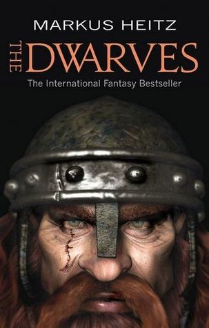

The Dwarves | Markus Heitz

The Dwarves" by Markus Heitz tells the story of Tungdil Goldhand, a dwarf raised by
humans, who embarks on a journey to
find his dwarven kin and protect Girdlegard from a growing evil. Abandoned at birth,
Tungdil lives a peaceful life as a
blacksmith until he's sent on a quest to deliver messages and reconnect with his
people. Along the way, he encounters
various races, fights monstrous creatures, and discovers his own heritage,
ultimately becoming a key figure in the fight
against a dark force threatening to consume the land
Click here
Dwarf Warfare | Chris Pramas

Despite their short stature, dwarves are among the fiercest and most feared fighters
of all the races. From an initial
examination of the fighting methods of the individual dwarf soldier, this volume
expands its focus to look at how they
do battle in small companies and vast armies. It covers all of their troop types
from the axemen that form the front
lines of battle to their deadly accurate crossbowmen. Also examined are their
tactics in specific situations such as
underground fighting and combat in mountainous terrain. Finally, the book examines a
few specific battles in great
detail in order to fully demonstrate the dwarven way of war.
Click
here
The Gilded Rune | Lisa Smedman

A plague has ravaged the population of gold dwarves of the Great Rift. It starts
slowly, but the progression is
devastating. One dwarf has eyes that have become hard and glassy like marbles; a
second dwarf has skin that flakes off
in sharp, hardened scales; the skeleton of a third is petrified and fused in place;
a fourth wastes away with blood that
has turned dark and muddy.
Click
here